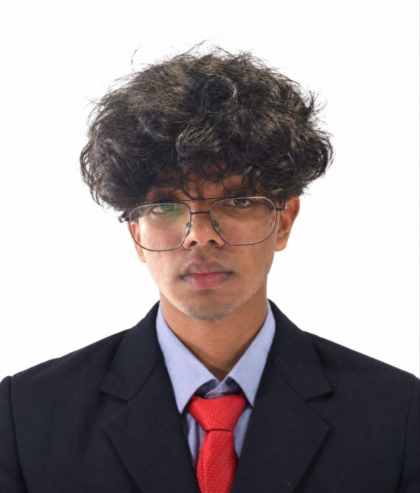

BBA student · Marian College Kuttikkanam
Curious by nature.
Driven to build.
A curious mind with a bit of creativity.
Personal resume · 2026

A little about how I think
Understanding the why matters.
I’ve always preferred learning from the ground up—following the logic instead of memorising an answer. It’s what draws me to quantitative aptitude and logical reasoning.
Explore my interests